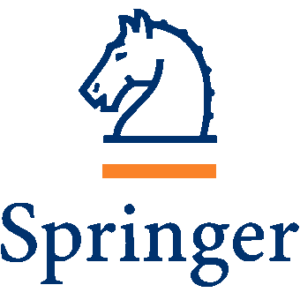
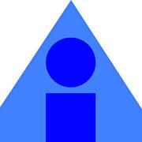

Qiaosi (Chelsea) Wang
Ph.D. Candidate
Human-Centered Computing
Georgia Tech
Email: qswang at gatech dot edu


I am a Carnegie Bosch Postdoctoral Fellow at the Human-Computer Interaction Institute (HCII), Carnegie Mellon University. I am working with Dr. Hong Shen and Dr. Jodi Forlizzi. I completed my Ph.D. in Human-Centered Computing at Georgia Tech. My research broadly lies in Human-AI Interaction, Computer Supported Cooperative Work (CSCW), Cognitive Science, and Responsible AI. I study the design of AI systems that can account for human's changing perceptions of AI during communications through the lens of Mutual Theory of Mind. Recently, I am interested in mitigating people's harmful perceptions of AI through responsible AI practices in early-stage UX design. I leverage a mix of qualitative and quantitative methods such as interviews, surveys, co-design, lab experiments, and statistical modeling to study these problems. My research has been published at top-tier HCI venues such as ACM CHI, CSCW, and DIS. In 2021, I was recognized with the GVU Foley Scholar award, the highest award for student excellence in research contributions to computing at Georgia Tech.
I received my bachelor of science degree from University of Washington, Seattle in informatics and psychology. I worked closely with the Department of Human-Centered Design and Engineering, the Information School, the DUB group, and the psychology department on several research projects during my undergraduate study.
I love indoor bouldering, hiking, and playing with my cat Gouda.
RESEARCH HIGHLIGHTS
Mutual Theory of Mind in Human-AI Interaction
Related Publications:
Towards Mutual Theory of Mind in Human-AI Interaction: How Language Reflects What Students Perceive About a Virtual Teaching Assistant. [PDF] [Talk]Qiaosi Wang, Koustuv Saha, Eric Gregori, David Joyner, Ashok Goel
CHI 2021: the ACM CHI Conference on Human Factors in Computing Systems. Mutual Theory of Mind for Human-AI Communication.[PDF]
Qiaosi Wang, Ashok K. Goel
IJCAI Workshop on Communication in Human-AI Interaction (CHAI) Theory of Mind in Human-AI Interaction. [PDF]
Qiaosi Wang, Sarah E. Walsh, Mei Si, Jeffrey O. Kephart, Justin D. Weisz, Ashok K. Goel
To Appear in CHI 2024 Workshops: the ACM CHI Conference on Human Factors in Computing Systems.
Designing Responsible AI

Illustration from adamfard.com
Related Publications:
Designing Responsible AI: Adaptations of UX Practice to Meet Responsible AI Challenges. [PDF] [Talk]Qiaosi Wang, Michael Madaio, Shaun Kane, Shivani Kapania, Michael Terry, Lauren Wilcox
CHI 2023: the ACM CHI Conference on Human Factors in Computing Systems. Sensing Affect to Empower Students: Learner Perspectives on Affect-Sensitive Technology in Large Educational Contexts. [PDF] [Talk]
Qiaosi Wang, Shan Jing, David Joyner, Lauren Wilcox, Hong Li, Thomas Ploetz, Betsy DiSalvo
L@S 2020: the ACM Conference on Learning at Scale.
AI-Mediated Social Interaction in Online Learning
Related Publications:
Understanding the Design Space of AI-Mediated Social Interaction in Online Learning: Challenges and Opportunities. [PDF]Qiaosi Wang, Shan Jing, Ida Camacho, Ashok K. Goel
CSCW 2022: Proceedings of ACM Human-Computer Interaction (CSCW) Co-Designing AI Agents to Support Social Connectedness Among Online Learners: Functionalities, Social Characteristics, and Ethical Challenges. [PDF] [Talk]
Qiaosi Wang, Shan Jing, Ashok K. Goel.
DIS 2022: the ACM conference on Designing Interactive Systems
PUBLICATION
Conference Proceedings
 |
Designing Responsible AI: Adaptations of UX Practice to Meet Responsible AI Challenges [PDF] [Talk]
Qiaosi Wang, Michael Madaio, Shaun Kane, Shivani Kapania, Michael Terry, Lauren Wilcox. In Proceedings of the 2023 CHI Conference on Human Factors in Computing Systems (CHI '23). ACM, New York, NY, USA, 16 pages. https: //doi.org/10.1145/3544548.3581278 (Acceptance rate: 28.4%) |
|---|---|
|
Co-Designing AI Agents to Support Social Connectedness Among Online Learners: Functionalities, Social Characteristics, and Ethical Challenges [PDF] [Talk]
Qiaosi Wang, Shan Jing, Ashok K. Goel. In Proceedings of the ACM Conference on Designing Interactive Systems (DIS ‘22). ACM, Virtual Event, USA. (Acceptance rate: 21.5%) |
|
Towards Mutual Theory of Mind in Human-AI Interaction: How Language Reflects What Students Perceive About a Virtual Teaching Assistant. [PDF] [Talk]
Qiaosi Wang, Koustuv Saha, Eric Gregori, David Joyner, Ashok K. Goel. In Proceedings of the 2021 CHI Conference on Human Factors in Computing Systems (CHI '21). Association for Computing Machinery, New York, NY, USA, Article 384, 1–14. DOI:https://doi.org/10.1145/3411764.3445645 (Acceptance rate: 26.3%) |
|
Sensing Affect to Empower Students: Learner Perspectives on Affect-Sensitive Technology in Large Educational Contexts. [PDF] [Talk] Qiaosi Wang, Shan Jing, David Joyner, Lauren Wilcox, Hong Li, Thomas Ploetz, Betsy Disalvo. In Proceedings of the ACM Conference on Learning at Scale 2020 (L@S ‘20). ACM, Virtual Conference, USA. http://dx.doi.org/10.1145/10.1145/3386527.3405917. (Acceptance rate: 25%) Best Student Paper Award |
|
The Synchronicity Paradox in Online Education. [PDF] David Joyner, Qiaosi Wang, Suyash Thakare, Shan Jing, Ashok K. Goel, Blair MacIntyre. In Proceedings of the ACM Conference on Learning at Scale 2020 (L@S ‘20). ACM, Virtual Conference, USA. https://doi.org/10.1145/3386527.3405922. (Acceptance rate: 25%) |
|
Design in the HCI Classroom: Setting a Research Agenda. [PDF] Lauren Wilcox, Betsy Disalvo, Dick Henneman, Qiaosi Wang. In Proceedings of the ACM Conference on Designing Interactive Systems (DIS ‘19). ACM, San Diego, CA, USA. https://doi.org/10.1145/3322276.3322381. (Acceptance rate: 25%) Best Paper Award |
Journal Articles
|
Reading the Room: Automated, Momentary Assessment of Student Engagement in the Classroom: Are We There Yet? [PDF] Betsy DiSalvo, Dheeraj Bandaru, Qiaosi Wang, Hong Li, Thomas Ploetz. PACM Interact. Mob. Wearable Ubiquitous Technol. 6, 3, Article 112 (September 2022), 26 pages. https://doi.org/10.1145/3550328 |
|---|---|
|
Understanding the Design Space of AI-Mediated Social Interaction in Online Learning: Challenges and Opportunities. [PDF] Qiaosi Wang, Ida Camacho, Shan Jing, Ashok K. Goel. Proc. ACM Hum.-Comput. Interact. 6, CSCW1, Article 130 (April 2022), 26 pages. https://doi.org/10.1145/3512977. Presented at CSCW 2022. |
|
Identifying and Planning for Change: Patient-provider Collaboration Using Lightweight Food Diaries in Healthy Eating and Irritable Bowel Syndrome. [PDF] Chia-Fang Chung, Qiaosi Wang, Jessica Schroeder, Allison Cole, Jasmine Zia, James Fogarty, Sean A. Munson. PACM Interact. Mob. Wearable Ubiquitous Technol. 3, 1, Article 7 (March 2019), 23 pages. https://doi.org/10.1145/3314394 |
Invited Book Chapter
|  | Investigating the Potential of AI-Based Social Matching Systems to Facilitate Social Interaction Among Online Learners.
Qiaosi Wang, Ida Camacho, Ashok K. Goel. In Social and Emotional Learning and Complex Skills Assessment. Springer, Cham, 2022. Pages 279-298. |
|---|
Abstracts & Extended Abstracts
|
Jill Watson SA: Design and Evaluation of a Virtual Agent to Build Communities Among Online Learners.
[PDF]
Qiaosi Wang, Shan Jing, Ida Camacho, David Joyner, Ashok Goel. In Extended Abstracts of the 2020 CHI Conference on Human Factors in Computing Systems (CHI EA ’20). Association for Computing Machinery, Honolulu, HI, USA. https://doi.org/10.1145/3334480.3382878. (Acceptance rate: 41.8%) |
|---|
Workshop Papers, Posters and Presentations
|  | Mutual Theory of Mind for Human-AI Communication. [PDF] Qiaosi Wang, Ashok K. Goel. IJCAI Workshop on Communication in Human-AI Interaction (CHAI). July, 2022. |
|---|---|
|
Designing for Agent-Mediated Online Social Connections: Lessons Learned and Potential Challenges. [PDF] Qiaosi Wang, Ida Camacho, Ashok Goel. CSCW2020 Workshop on CUI@CSCW: Collaborating through Conversational User Interfaces. October, 2020. |
NEWS
| Travel | Nov 9-13, 2024 | Attending the CSCW conference in San José, Costa Rica. |
|---|---|---|
| Travel | Oct 16, 2024 | Attending the HCOMP conference in Pittsburgh, USA. |
| Job | Oct 14, 2024 | I started my new job at the human-computer interaction institute at Carnegie Mellon University today as a Carnegie Bosch Postdoctoral Fellow! I will be working with Hong Shen and Jodi Forlizzi on responsible and UX practices. |
| Ph.D. Milestone | Sep 12, 2024 | I successfully defended my Ph.D. thesis on "Mutual Theory of Mind for Human-AI Communication in AI-Mediated Social Interaction"! I am so grateful for the guidance and feedback from my advisor Dr. Ashok Goel and my committee Dr. Munmun De Choudhury, Dr. Betsy Disalvo, Dr. Q. Vera Liao, and Dr. Lauren Wilcox. |
| Travel | May 11, 2024 | Attended the CHI conference in Hawaii to lead our first workshop on Theory of Mind in Human-AI Interaction. |
| Workshop | Dec 1, 2023 | Excited to share that our workshop proposal on "Theory of Mind in Human-AI Interaction" has been accepted to CHI'24 workshops. Call for papers can be found on our workshop website. |